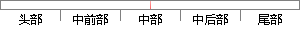

存盘可以有意无意的对数据进行写操作。
片段位置图

相似结果|
相似片段 1：和路径在主控窗口属性中设定，并在系统运行过程中自动产生。系统自动进行数据存储操作，但是该数据库无法任意添加信息。实时数据库内所定义的数据对象，通过设定它们的存盘属性可以自动存入存盘数据库内。如果将单个
相似片段 2：名称+“MCGS”。四川大学硕l学位论文用户可以在外部应用程序中直接对ⅥCGS的存盘数据库进行操作，编制独立的后处理软件。数据后处理则是对历史存盘数据进行处理。MCGS组态软件的存盘数据库是原始数据
相似片段 3：的“重放”按钮是“清晰的”，可以进行重放操作。存盘文件的工作流程图如7—2l所示。图7—21数据工作流程存盘7．7事后数据处理事后数据处理按图7—22所示读存盘数据文件并显示需要的参数。存储在存盘文件中的数据是按时间顺序和帧格式存放的。
|
※ 片段修改建议 ※
近似词参考：- 进行：举行
- 操作：操纵
系统自动生成语句：存盘可以有意无意的对数据举行写操纵。
注：本片段修改建议为系统自动生成，仅供参考。